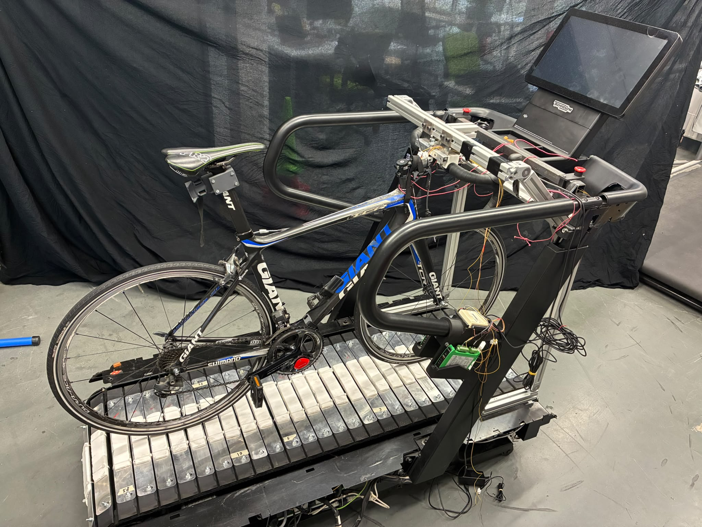
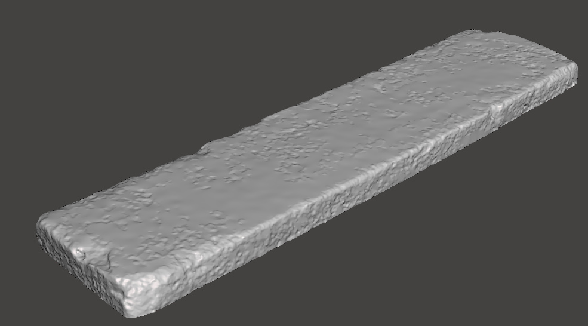
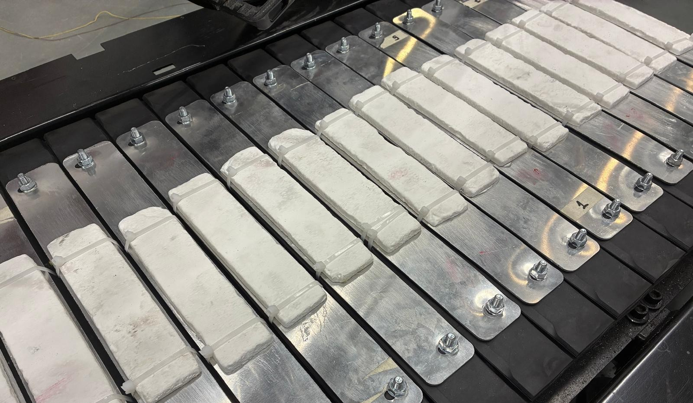
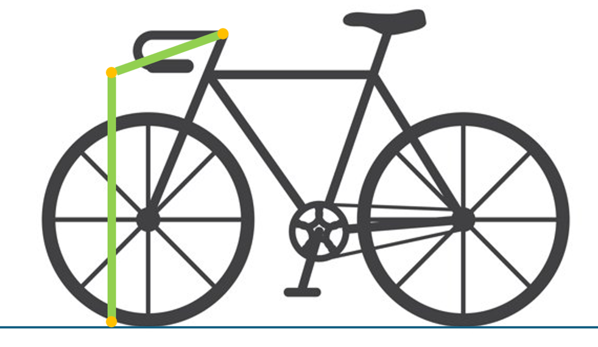
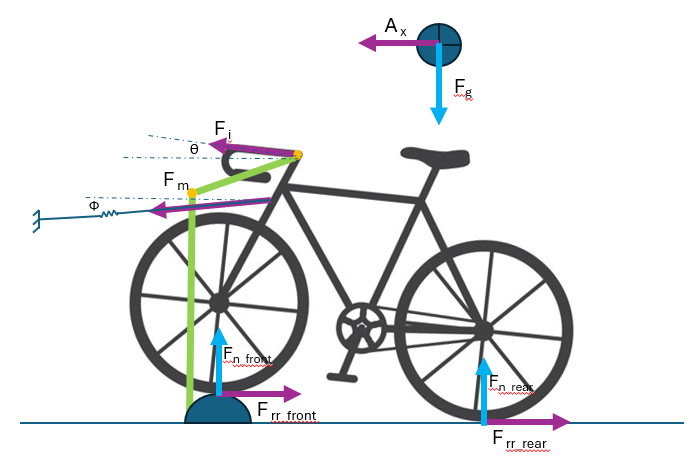
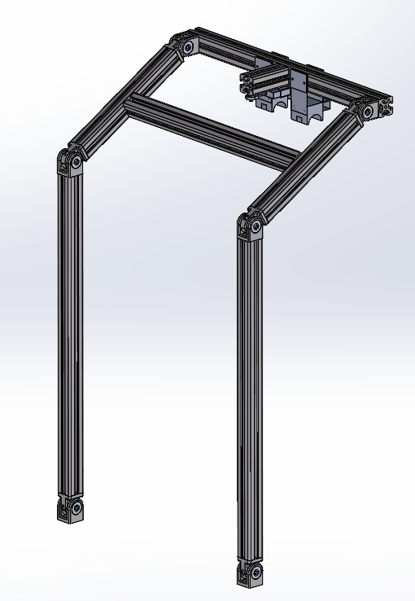
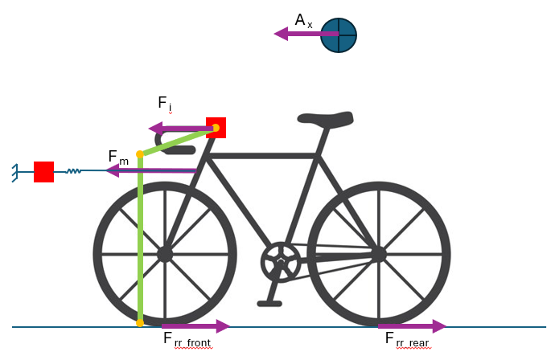

MSc thesis · TU Delft
A testbench for measuring bicycle power loss due to the road surface
How much of a cyclist's effort disappears into the road? I designed and built a testbench that can measure it.

The problem
When you ride a bicycle, your power is lost to aerodynamic drag, drivetrain losses and rolling resistance. Aerodynamics and rolling resistance have both been studied extensively. One part of rolling resistance, however, has received very little attention: the vibrational losses. On a rough surface such as Dutch brick roads, cobblestones or coarse asphalt, the tyre, wheel, bike and rider start to vibrate. The energy that goes into those vibrations is lost.
These losses are hard to measure. On the road, wind, temperature and the rider's own movements add a lot of noise, and it is almost impossible to ride exactly the same line twice. Indoor test setups do exist, but they lack the rough texture of a real road: on a standard roller the surface is perfectly smooth, so the effect of the road is not there at all.
Research question: How can the power loss caused by the road surface be measured accurately and repeatably on a testbench?
My approach
Previous MSc students have tried to measure these losses in two ways:
- A closed trailer. The first attempt put the cyclist inside a closed trailer. With no wind inside the trailer, there is no aerodynamic drag, so only the rolling losses remain. In practice, however, the measurements were not accurate enough to show the vibrational losses.
- A mathematical road surface. The second attempt modelled a classic brick road mathematically as a series of bumps, and calculated the power loss from the drop in speed after riding over them. The problem: bumps make the bike and rider move in a completely different way than a real brick surface does, so the losses measured were not the losses of a real road.
I took a different route and brought a real road surface into the lab:
- Start with a treadmill (a Technogym Skillrun) and cover it with a custom-made road surface.
- Build a stabilization mechanism that keeps the bike upright on the treadmill.
- Build a measurement setup that measures the resistive force on the bike.
This solves the two biggest problems at once: because the bike stands still, there are no aerodynamic losses, and because the belt loops around, the bike always rides over the same real road surface.

Design and build
1. Making the road surface
To get a road surface that is as real as possible, I 3D scanned actual road bricks, the type you see on many Dutch roads. I cleaned up and repaired the scans in Meshmixer and then 3D printed the bricks. Mounted on the treadmill belt, they form a one-to-one copy of a real road surface.


2. Making the stabilization mechanism
A bike on a treadmill needs to be held upright, but holding it too tightly would remove exactly the motion I wanted to measure. The mechanism had to let the bike and rider move naturally, as they would on a real road, while still keeping the bike stable.
Allowed motion
- Longitudinal (forwards and backwards)
- Vertical (up and down)
- Pitch (nose up and down)
Restricted motion
- Lateral (sideways)
- Roll (tipping over)
- Yaw (steering away)
My solution is a double inverted pendulum on each side of the bike, connected to each other with crossbeams. The pendulums allow the three natural degrees of freedom, while the crossbeams lock the other three.



3. Making the measurement setup
The bike stands still on a moving belt, so the rolling resistance of the road surface tries to pull it backwards. The force needed to hold the bike in place is therefore a direct measure of that resistance. I measure it with two load cells:
- The main load cell holds the bike in place and measures the total resistive force on the bike (Fm).
- The second load cell sits in a custom flexure device between the bike and the stabilization mechanism. It measures the force that the stabilization mechanism puts on the bike (Fi).
Without the second load cell, the force of the stabilization mechanism would end up in the measurement and look like extra rolling resistance. By measuring it separately, I can filter it out and keep only the resistance caused by the road surface.

Testing and results
How did you validate the testbench? Show what it can measure, for example a comparison between different road surfaces or tyre pressures, and how accurate and repeatable the measurements are.
Conclusion
Summarise the result in a few sentences: what the testbench can do now, how it compares to existing methods, and what could be improved in future work.
What I learned
- A technical skill, e.g. designing a stiff and accurate test setup
- A research skill, e.g. separating a small signal from a lot of noise
- Something about yourself, e.g. planning a year-long project on your own